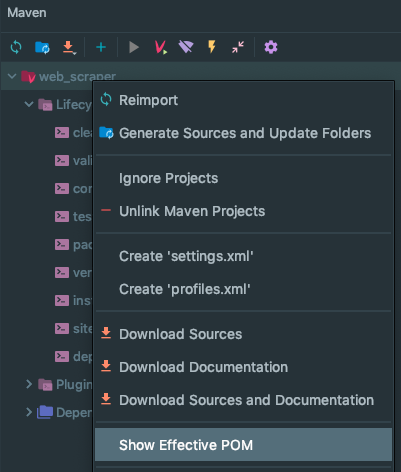

Starting with Maven
Maven Coordinates
Identifies a location in a Maven Repository.
- groupId - usually an organisation's domain in reverse (could also just be 'junit')
- artifactId - project name
- version
e.g.
<groupId>com.gwenci</groupId>
<artifactId>web_scraper</artifactId>
<version>1.0-SNAPSHOT</version>
groupId and version can be inherited from a parent POM
Version
The version number is made up of a number of components. e.g. 3.2.1-987-beta
- major version e.g. 3
- minor version e.g. 2
- incremental version e.g. 1 (from patching)
- build number e.g. 987 (from CI build)
- String Qualifier e.g. beta
The most common in use is: major.minor.incremental
Snapshot Versions
If the string qualifier is "SNAPSHOT" this tells Maven that this is a development version, and therefore not stable. Maven will go and check for newer versions of this project instead.
Maven Repositories
There are 3 main types.
- local - hosted on your own machine, usually somewhere like: ~/.m2/...
- central - the public repo hosted at https://repo1.maven.org/maven2
- remote - other locations (private or public)
Maven caches artifacts locally and will not go looking for them again (unless it's a SNAPSHOT)
Useful web site: https://mvnrepository.com - shows available Maven central artifacts.
The POM file
- Stands for Project Object Model
- describes the project
- must comply with maven-4.0.0.xsd (xsd - xml schema document)
- can inherit properties from parent POM
Effective POM - this is the POM complete with inherited properties, can be displayed with:
mvn help:effective-pom
Can also be found in Intellij IDEA, here: 
Maven Dependencies
A dependency is an artifact that your project relies on. Typically a JAR or a POM.
Transitive Dependency
If your project needs artifact A and artifact A needs artifact B, transitively your project need artifact B.
These transitive dependencies can be many layers deep, but they cannot be cyclic.
Dependency Managament
Allows project authors to specify the version of the artifact they need.
Dependency Mediation
Determines the version of an artifact to use when multiple versions are encountered.
e.g. project --> A --> D (v2.0)
|
+---> B --> D (v1.5)
In this case D (v2.0) would be used as it is the nearest definition in the dependency tree.
This can lead to confusing situations, but most of the time it works.
Usually gets the latest version but not all the time.
Dependency Exclusion
Can exlude certain dependencies.
Optional Dependencies
Can mark dependencies as optional, so they aren't used downstream.
Dependency Scope
- Compile - available on all classpaths, propogates to downstream projects. (this dependency is include when your project is included as another project's dependency)
- Provided - like Compile but expected to be provided by JDK/container at runtime.
- Runtime - not required for compilation, but needed at runtime (eg. data access for a database)
- Test - on available on test classpath. Not transitive (e.g. junit or mockito not required for projects that are dependent on your project)
- System - similiar to provided
- Import - import the dependencies of a POM
Depdency Plug In
Useful goals
- mvn dependency:tree - show dependecy tree, useful for resolving conflicts
- mvn dependency:go-offline - resolve all and prepare to go offline
- mvn dependency:purge-local-repository - handy troubleshooting step
- mvn dependency:sources - get sources for all dependencies
Standard Directory Layout
Apache Maven's Guide to Standard Directory Layout

- main - contains source code organised by language (e.g. java and kotlin)
- resources - contains files such as text files, xml files, properties files, images and so on